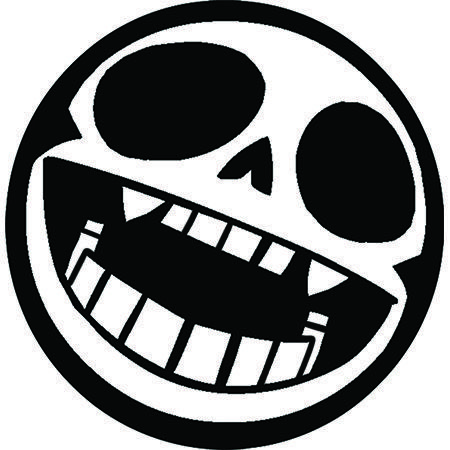
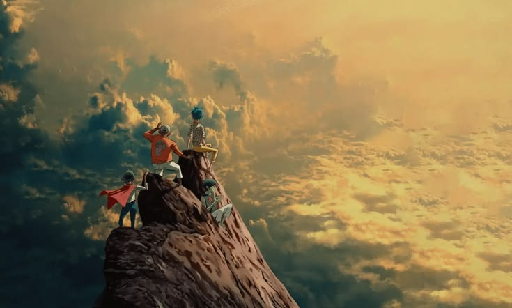
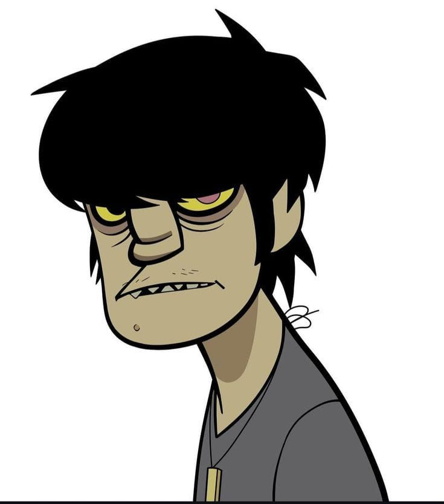

.jpg)
Stuart “2-D” Pot
Vocal, teclado, escaleta, guitarra rítmica, violão e piano.
1998 — presente
Biografia da Banda

Conheça a banda
Gorillaz é uma banda virtual britânica criada no ano de 1998 pelo vocalista e líder do Blur, Damon Albarn, e pelo cartunista Jamie Hewlett, co-criador da história em quadrinhos Tank Girl. A banda é composta por quatro membros animados: 2-D, Murdoc Niccals, Noodle e Russel Hobbs. A música do grupo é resultado da colaboração entre vários outros músicos, sendo Damon Albarn o único membro permanente. Seu estilo musical normalmente é classificado como rock alternativo, embora haja muita influência do britpop, dub e da eletrônica.
Formação atual
Vocal, teclado, escaleta, guitarra rítmica, violão e piano.
1998 — presente
Fundador da banda, baixo e caixa de ritmos.
1998 — presente.jpg)
Bateria e percussão.
1998 — presente
Guitarra solo, violão, teclado, escaleta e vocal de apoio.
2000 — presentePaula Cracker — guitarra solo (1998–2000) · Del, The Ghost Rapper — vocal de apoio e rap (2001–2007, 2017–presente) · Cyborg Noodle — guitarra solo (2010) · Ace — baixo (2018).
A trajetória